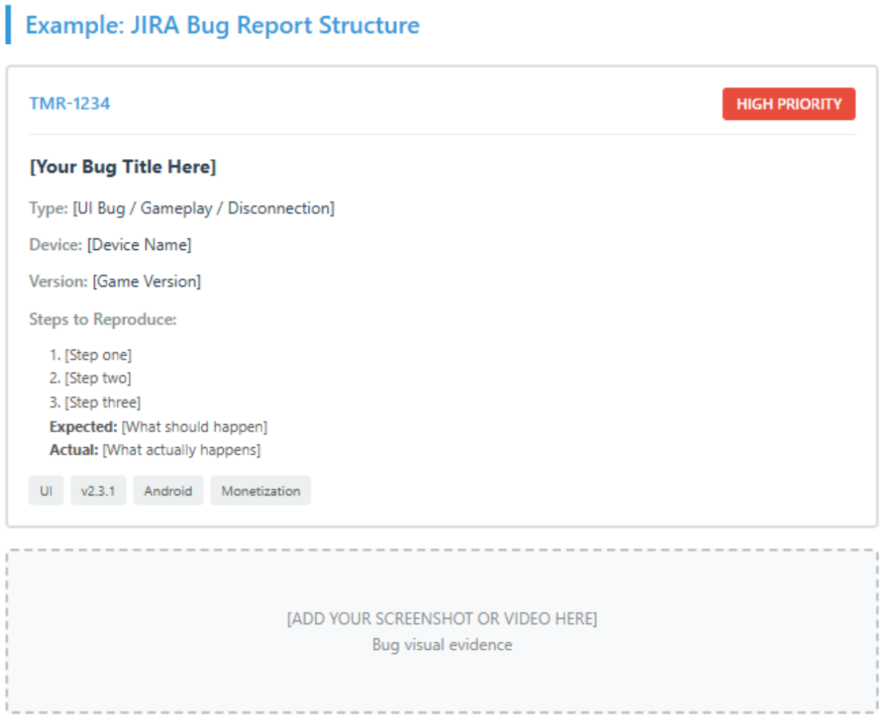

My Daily Testing Routine
Every morning at Rage Quit Games started the same way: I'd open JIRA and scan through the available tasks, with a relevant prioritization. By selecting the task, I became solely responsible for it. And then, when all the tasks were "checked", the real fun began.
I'd dive into the game, playing through different scenarios, and trying to break things. When I found a bug - (and that always happens!)- I'd immediately start documenting it. The key to being a good QA was to be clear and concise: I'd write a short, descriptive title, add tags indicating which version of the game I was testing, which mobile device I was using, and whether type of bug that was (for example, gameplay, UI issue, or connection problem).
Then came the most important part: writing reproduction steps in simple, clear English. I learned quickly that developers needed to recreate the bug exactly as I found it, so every step mattered.
Then I was setting a priority classification, it was important especially when it came to monetization bugs. If something affected how players could purchase items or interrupted payment flows, that got flagged as high priority immediately. For every bug, I'd attach screenshots or videos showing the issue.
Working With Developers
Testing is sometimes a cooperative job. When I encountered bugs that were tricky to explain or needed immediate clarification, I'd reach out to developers (or they to me) directly.
If they were working remotely, I'd ping them on Slack. If they were in the office, I'd walk over to their room - they joked that I was "bordering them", but they always appreciated the direct communication.
This constant dialogue taught me how to communicate technically and helped me build strong working relationships.
Regression Testing
One of my key responsibilities was regression testing. Whenever a bug was found or fixed, I'd go back and verify whether that same bug existed in previous versions.
The worst-case scenario was finding out that a bug had made it into the live version that real players were already experiencing.
Checklist
When big updates were coming, we'd start the checklist. Using the TestLab platform, we'd systematically test the most important features in the game to ensure we could release the most bug-free version. We also had to verify that the new elements didn't break existing features.
Because of my experience on the team, I was often responsible for adding new features to the checklist by writing detailed instructions for how other testers should verify each feature.
Edge Cases
I enjoyed finding edge cases - those weird, unexpected scenarios that most people wouldn't think to test. For example, what happens if a player starts purchasing a loot box and suddenly loses internet connection, then reconnects immediately?
These edge cases were often the most difficult bugs to recreate and required a lot of thinking. But when this kind of bug was found, the whole team was always celebrating!
Performance Testing
I'd head to our technical room and connect multiple test devices - phones, tablets, everything we had. Then I'd run a custom Python script, which automatically moved a player character around the game map while collecting FPS data. All this performance data would flow into our company's Excel system.
The real magic happened when we generated heat maps from this data. These heat maps visually showed us exactly where on each map FPS drops occurred. This meant developers could target specific problem areas for optimization, for example, removing unnecessary objects, adjusting textures, or optimizing LOD (Level of Detail) settings. When I became a developer assistant, I had the pleasure of doing this!

Brainstorming Sessions
Every so often, we'd have (my favorite thing) brainstorming sessions with our CEO. We'd "play through" specific game elements together, and everyone could share their opinions and suggestions for improvements.
I managed to propose several ideas that made it into the game, including new map designs and changes to the damage system that gave players more fair matches. Knowing that my input improved the player's experience was (in my opinion) one of the most rewarding parts of the job.
Becoming a Developer Assistant
My role eventually evolved beyond pure QA testing. I became a developer assistant, which meant I was responsible, for example, for keeping the Unity project organized, checking bugs directly in Unity by reading console logs, and even onboarding new people to the project.
And for more information, don't hesitate to contact me!